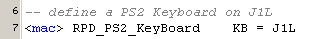

july 2005
RPD PS2 KeyBoard
This module interfaces a PS2-KeyBoard or PS2-mouse to the PIC.
A lot of information about PS2 can be found at Computer-Engineering.org
At the moment the software limits the position of this module to J1L (because it needs interrupt on rising edge, which is only available on RB0). Positioning the module on RB4 ... RB7 should also be possible, but the software becomes a lot more complex. Unfortunatly, this module eats up 1 analog channel RA0.

JALcc macro call

JALcc use
JALcc macro expansion